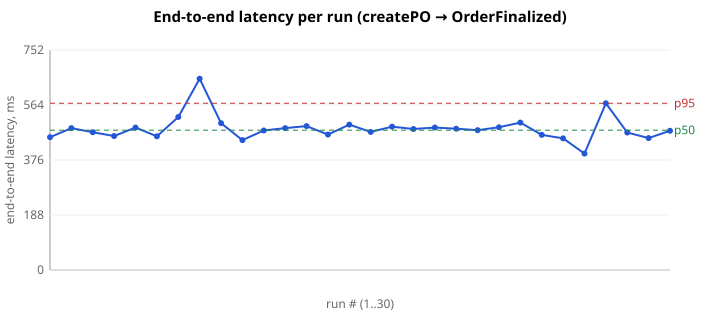
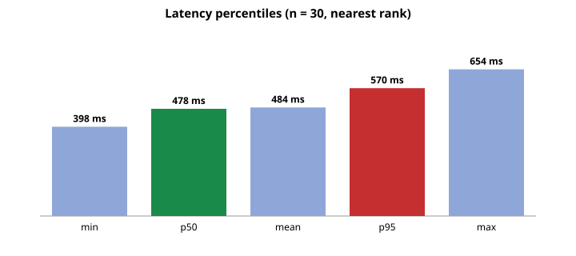
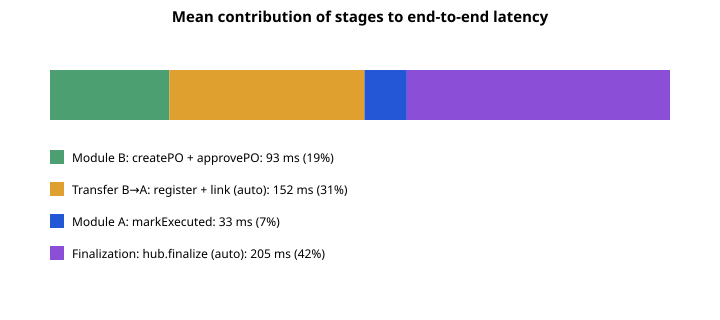

| Success | Discrepancies | p50 | p95 | min | max |
|---|---|---|---|---|---|
| 30/30 (100.0%) | 0 | 478 ms | 570 ms | 398 ms | 654 ms |



nearest-rank percentiles; clearing execution is performed by the script on behalf of the clearing center (SETTLEMENT_ROLE); timestamps by wall clock in the client; hub state polled every 20 ms